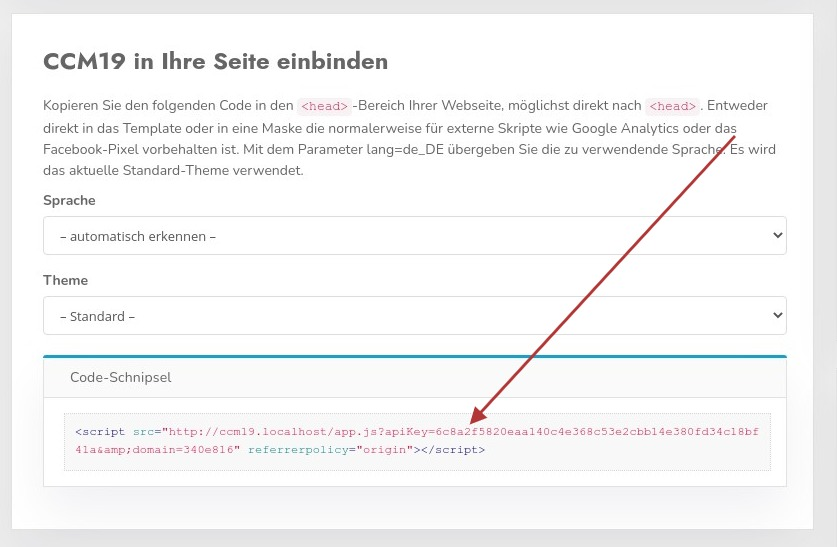

DIe Frage die sich natürlich stellt: wie verknüpfe ich meine Webseite / Onlineshop mit CCM19 bzw. wie bekomme ich das Banner auf meine Seite?
Die Lösung ist eigentlich sehr simpel, Sie müssen lediglich einen kleines Stück HTML Code dass das CCM19 System Ihnen fertig liefert in Ihre Seite integrieren.
Den Schnipsel finden Sie im Dashboard Ihrer CCM19 Installation - passend immer für die jeweilige Domain.
DIe meisten CMS / Shop Systeme haben eine fertig Oberfläche für diese Art von Integration, so dass man das darüber einfach abwickeln kann. Eine Reihe von Systemen sind im Menü links aufgelistet.
in Ihrem Dashboard finden Sie den folgenden Bereich.

Wenn Sie eine spezielle Sprache verwenden wollen, können SIe diese mit dem Selectfeld Sprache auswählen.
Zusätzlich können Sie ein Theme bestimmen dass aufgerufen werden soll, abweichend vom Standardtheme.
Der fertige Schnipsel ist mit dem roten Pfeil markiert.
Der Einbindungscode kann z.B. so aussehen.
<script src="http://CCM19ServerUrl/app.js?apiKey=1234&domain=1234&lang=de_DE"
referrerpolicy="origin">
</script>Diesen Code kopieren Sie und binden in auf Ihrer Seite möglichst weit oben im Kopf der Seite ein, am besten direkt nach dem ersten
Element<html>
<head>
<script src="http://CCM19ServerUrl/app.js?apiKey=1234&domain=1234"
referrerpolicy="origin"></script>
</head>
<body>
</body>
<html> Nach diesem Muste laufen auch alle anderen Integrationen in allen möglichen CMS / Shop Systemen ab. Je nach verwendetem System ist es etwas komplexer oder einfacher diesen Schnipsel unterzubringen.
DIe meisten CMS / Shop Systeme haben eine fertig Oberfläche für diese Dinge, so dass man das darüber einfach integrieren kann